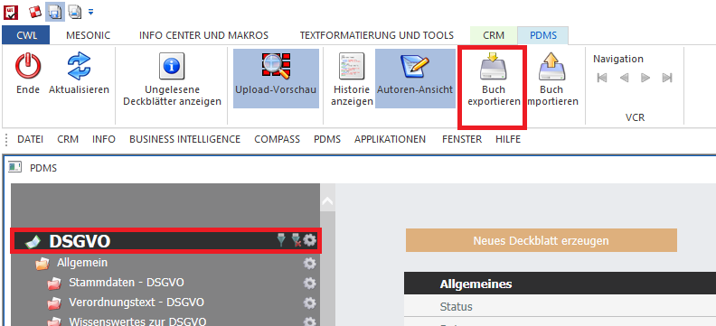
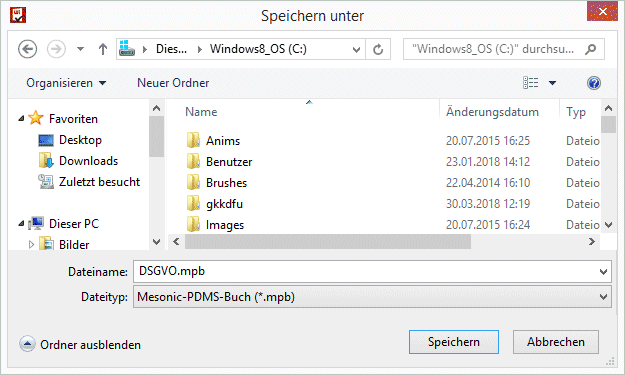

Mittels "Buch exportieren" kann eine bestehende Buchstruktur exportiert werden, um diese woanders wieder übernehmen zu können (andere Installation, anderer Mandant, etc.). Es werden folgende Inhalte exportiert:
ü Buchstruktur (inkl. Kapitel und Subkapitel)
ü Vorlagen inklusive der enthaltenen Eigenschaften und Zusatzfeldern
ü Inhalt der Deckblätter (Es werden alle Deckblätter unabhängig vom Status exportiert)
ü Uploads
Um ein Buch zu exportieren, muss der Fokus in der Baumstruktur auf das gewünschte Buch gesetzt werden.

Im Anschluss wird das Buch exportiert, indem auf den Button "Buch exportieren" gedrückt wird. Es öffnet sich dann das Fenster "Speichern unter", um den Speicherpfad bekannt zu geben.

Die Datei wird mit der Dateiendung .mpb gespeichert und kann nun in einem anderen Mandanten oder einer anderen Installation übernommen werden.